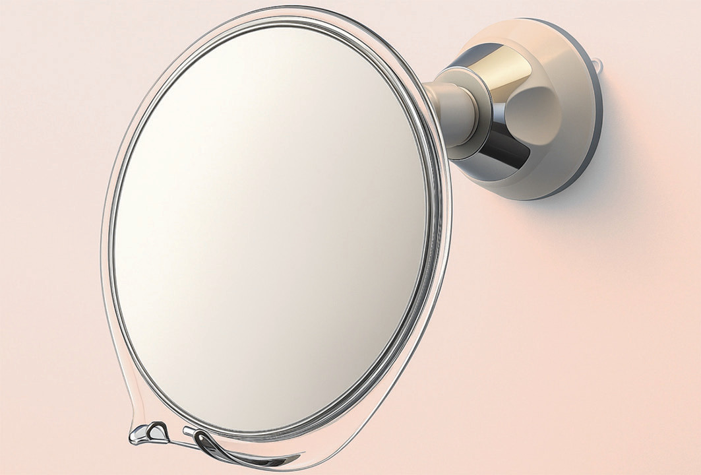
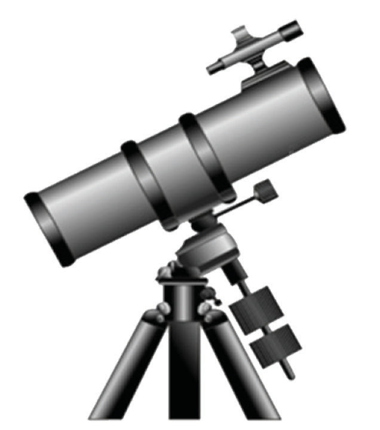
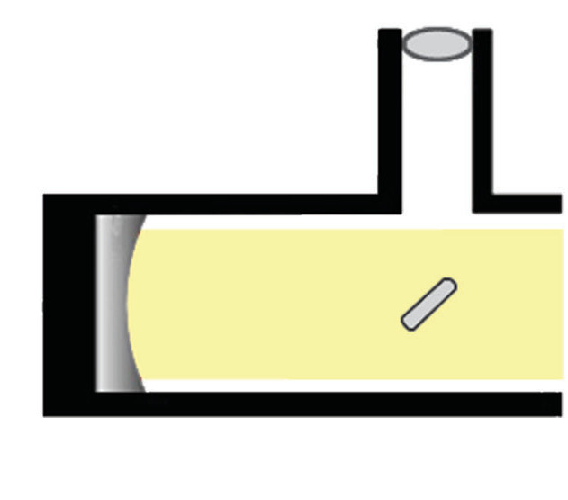
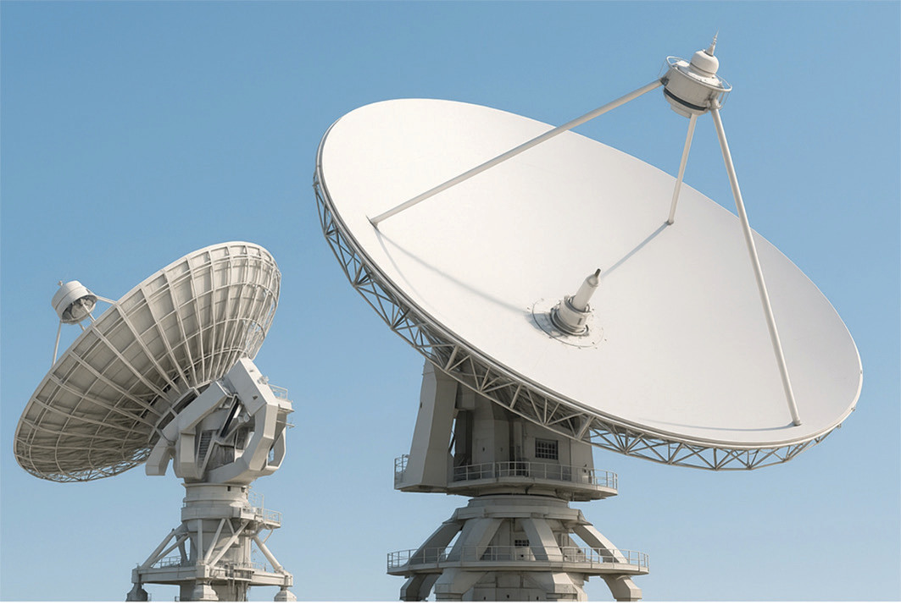

Reflecting telescopes: A concave mirror (primary mirror) forms images of distant stars at the focal point. A plane mirror (secondary mirror) is then used to project the rays to the side where the image can be viewed through a lens, as shown in Figure 4.40.
Telescope tube


Eyepiece
Primary mirror
Secondary mirror
Light from distant object
Figure 4.40: Reflecting telescope
In some cases, the concept of light reflection off concave surfaces is used for applications beyond light and image formation, outlined as follows: Satellite dishes: Satellite dishes are specialized antennas designed to receive and transmit signals to and from satellites in orbit. Figure 4.41 shows a satellite dish.
